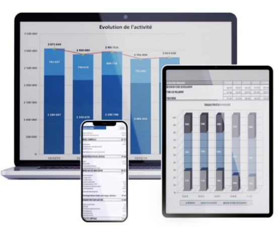
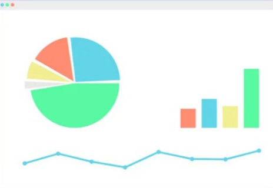

<!DOCTYPE html>
<html lang="en">
<head>
    <meta charset="UTF-8">
    <meta name="viewport" content="width=device-width, initial-scale=1.0">
    <title>Document</title>
    <link rel="stylesheet" href="style.css">
</head>
<body>
    <footer>
        <div class="logo">
            
        </div>

<section class="partie1">
    <h3><p>Dynamisez votre Planifiez votre futur.</p></h3>
 <p><br>Mettez en place rapidement des outils de gestion adaptés</p>
</section>

<section class="partie2">
<h3>Avec l'assistant de gestion,Maîtrisez rapidement l'analyse financière.</h3>
<p>Plusieurs semaines voire plusieurs mois peuvent se passer avant l'établissement d'une situation inttermédiaire du fait de la précicion requise</p>
<p>Notre offre permet d'obtenir rapidement des états de gestion présentant un niveau de précision acceptable dans la mesure où la compatibilité est à jour</p>
<p>la pertinence d'une gestion se mesure plus par sa rapidité d'obtention que par son degré de précision</p>
<a href="#">Spécial étudiant </a>
<div class="img">
     
</div>
</section>

<section class="partie3">
    <h3>Bilans comparés</h3>
    <p>L'outil de contrôle et de suivi de l'entreprise.</p>
    <p>Avec le logiciel BILANS COMPARES,surveillez régulièrement la santé financière des entreprises que vous conseillez</p>

    <h6>LA PHILOSOPHIE DU LOGICIEL</h6>
   <p> BILANS COMPARES permet à partir des données comptables (balance) 
    d'avoir une vision dynamique de l'entreprise en mettant en évidence les flux 
    financiers sur plusieurs années (5ans), et de contrôler les indicateurs de 
    rentabilité , d'équilibre financier et de croissance.Avec BILANS COMPARES,
    dynamisez l'entretien annuel de présention des comptes en élargissant le 
    champ de vision de l'analyse
    Quelques clics suffisent pour réaliser un dossier d'analyse complet 
   </p>
   <h6>Logiciel réalisé en partenariat avec la société High Novation</h6>

   <a href="#">Testez gratuitement</a>

   <div class="img">
      
   </div>

</section>

<section class="partie4">
<h2> Pourquoi Assistance Gestion Informatique</h2>
<p>Ces applications sont déstinées à fournir une aide complémentaire dans la géestion de votre entreprise </p>
<p>Elles ne sauraient remplacer l'Expert comptable.Elles n'ont pas pour but     de se substituer
    aux situations intérmédiairs telles que peuvent les établir les proffessionnels de la compatibilité.</p>
    <p>L'établissement de situations intérmédiaires supposes de passer un grand nombre 
        d'opérations diverses de façon à ce que les comptes intérmédiaires présentent le même 
        degré de précision que les commptes annuels : écritures d'inventaire,provisions charges à 
        payer... 
    </p>
</section>


    </footer>
</body>
</html>